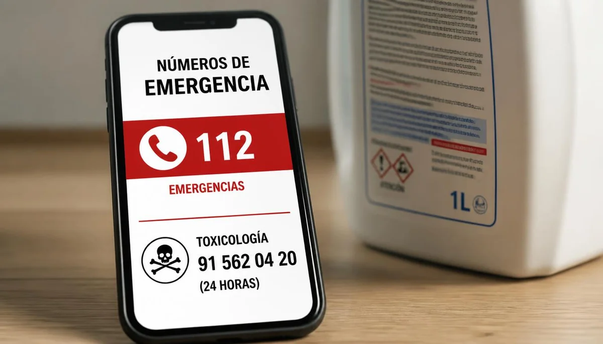

Protocolo ante sospecha de intoxicación
Ante la sospecha o certeza de que un menor ha ingerido un producto químico, un fármaco o una sustancia tóxica, la rapidez y la serenidad de los adultos son determinantes. Saber qué hacer y, sobre todo, qué evitar de forma estricta previene complicaciones graves para la salud del niño.
Qué hacer y qué evitar estrictamente
Lo primero es conservar la calma, retirar cualquier resto visible de la boca del menor y comprobar qué producto o sustancia ha estado a su alcance, guardando el envase para mostrárselo al personal médico. Está estrictamente contraindicado provocar el vómito por iniciativa propia o administrar líquidos (como agua, leche o aceite), ya que esto puede agravar la lesión si el producto es corrosivo o tóxico.
Contacto urgente con servicios de toxicología o emergencias
Se debe contactar de inmediato con el servicio de información toxicológica o con el teléfono de emergencias médicas, facilitando los datos del producto ingerido, la cantidad estimada y el estado general del niño para recibir pautas precisas.
"Ante una intoxicación nunca se debe provocar el vómito; conservar el envase del producto y llamar de inmediato a emergencias es la conducta adecuada."
Atención a los síntomas de alerta
La somnolencia inusual, los vómitos persistentes, la dificultad para respirar o la alteración del comportamiento exigen el traslado urgente a un centro hospitalario para su asistencia.
➔ Volver al índice de Prevención de Accidentes